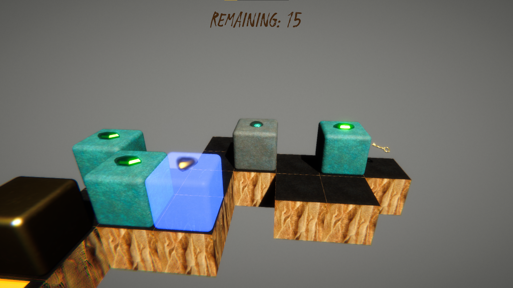
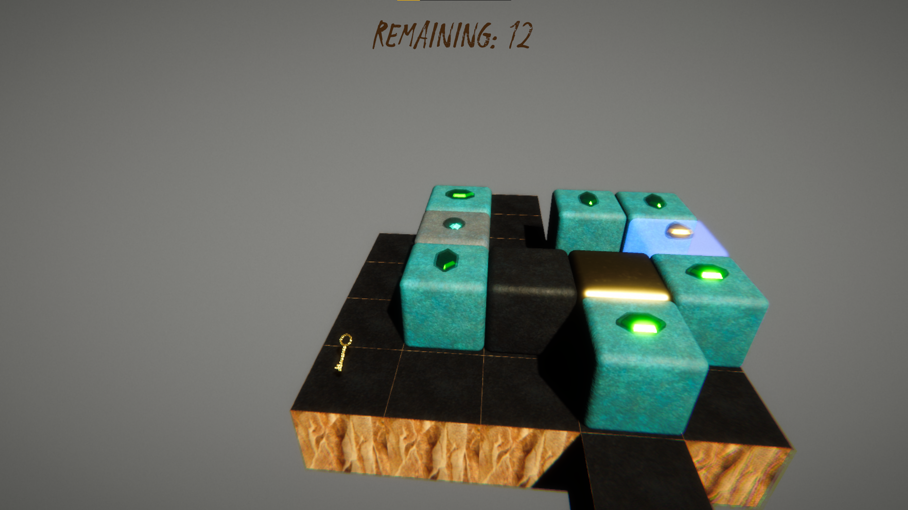
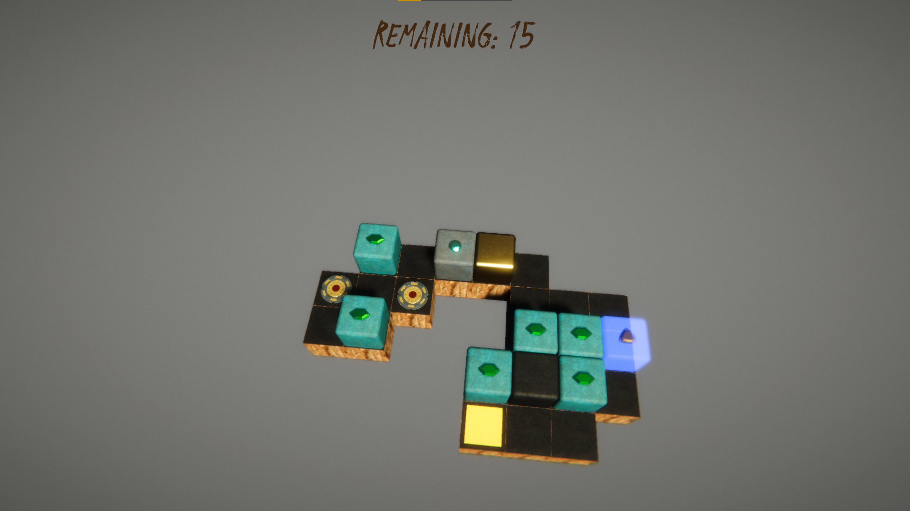

Ishibako is a small puzzle game inspired by the original Japanese puzzle game Sokoban. Ishibako is developed for a mock game-jam and turned out fun for puzzle enjoyers. You can download the game from the button down below.




This page will also keep track of the patch notes, as you can see down below!
-
Patch Notes - 20/06/2021
- Since we are done with the alpha phase of the game, we are releasing the Beta versions as downloadable standalones for Windows, Mac and Linux. You can still play the Alpha WEBGL version here.
- Lose condition implemented!
- Texture atlas optimization.
- Resolution scaling optimization.
- Actual resolution down from HD+ to HD.
- Shader quality optimization.
- Color adjustments.
- Arriving the exit zone now plays a sound cue.
- Ability to zoom in and out added. Use the mouse-wheel.
- UI Feedback on options scene, both visual and sound.
- Options scene active hierarchy bugfix.
- WIN version escape key crashed WEBGL bugfix.
- Filter shader bugfix.
- Stuttering movement bug fix.
- Hotfixing WEBGL cache because it can't definitely make a clean one. Oh no, I have to do it or the game would crash. Boo.
- Fixed buttons not working due to zindex. They were picky about it.
- Level Select Slider now only shows developed levels. Why not earlier?
- Gate rendering fixes.
- VFX Object decreases to make effects use less frames.
- OST & Asset cleanup to decrease the loading time.
- Rotation calculations are now rounded because Euler calculations leave room for Gimbal Lock that ends up with a percentile error.
- Fixed player movement errors due to above mentioned Gimbal Lock.
- Post Processing toned down for performance.
- Shader Performance Improvements.
- Some Optimization Settings now changed. Looking at you, Cubelue.
- Level Selection screen buttons fix. Now you can go back with the press of a digital button, instead of a physical one.
- Simplified Credits a bit. Additional thanks to Goza's Piano Channel for this since I looped it a lot while coding!
- Key FX & VFX added. Now you know, Onur!
- Better Audio Controls, Worse Code. Thanks Taylan!
- Movement changes that should feel more responsive even in dated systems. Did it work Burcu?
- Thanks to testers Zafer, Aslı, Onur, Taylan, Burcu, Arda, Batuhan, Doruk, Cem & Korcan! Thanks to them I had work to do, for absolutely free.
- Happy Birthday to me!
- Filters now won't suck the player in. How dapper.
- Our composer friend blessed us with a new theme song for the game. This experimental render is really entertaining and we think fits the game perfectly. Feel free to drop a comment or a like on the original composition here.
- Some code & asset cleanup so the game loads faster. HTML5 is fun.
- Initial Alpha 3.1 commit. Ishibako is live!
Patch Notes - 08/06/2021 Ishibako is now in Beta! This is a great patch for everyone involved either in the development or the testing. This patch introduces the lose condition which in turn is a milestone for the beta release. Thank you everyone!
Patch Notes - 07/06/2021
Patch Notes - 06/04/2021
Patch Notes - 29/03/2021
Patch Notes - 06/03/2021